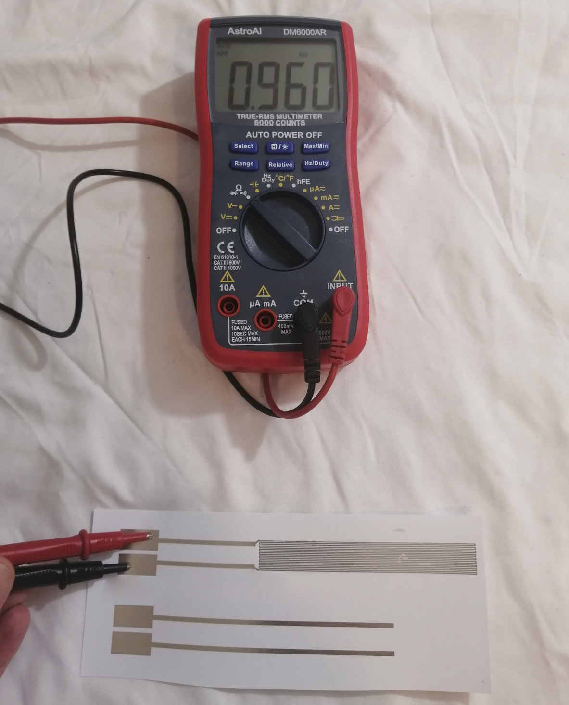

6.810 Engineering Interactive Technologies (fall 2021)
Lab 7: Inkjet Printed Temperature Sensor
In this lab, we will first create the digital design of an ink-jet printed temperature sensor to sense the heat of the mug when a hot drink is poured in. We will then create the overall circuit design for the mug, which contains the temperature sensor and connector pads for the EL display. Finally, we will print out the circuit design on the inkjet printer. In the next lab, we will then assemble everything into the final mug and write the temperature sensing code.don't forget to bring your EL display

Steps:
- Understand Temperature Sensing
- Choose Overall Resistance (R) for Temperature Sensor
- Determine Minimum Wire Thickness (A) for Temperature Sensor
- Determine Thermal Resistivity (p) for Inkjet Printed Silver
- Determine Wire Length (l) to Achieve 1kOhm Resistance.
- Generate Temperature Sensor Using Processing Script
- Integrate Temperature Sensor and EL Display Circuit
- Inkjet Print Circuit
Deliverables
At the end of the lab, upload to your student google drive:- the Processing code (.pde) to generate the temperature sensor
- the Adobe Illustrator file (.pdf) with the completed circuit design
- 1 photo (.jpg or .png) of your inkjet printed temperature sensor
(1) Understand Temperature Sensing
You will make your own temperature from scratch using conductive inkjet printing. But why can conductive traces be used to sense temperature?Thermal Resistivity (Resistance Changes with Temperature): Conductive wires can be used to sense temperature by making use of a material property that most conductive metals share: Their resistance changes with changes in temperature. This property is called thermal resistivity p.
Formula for Computing Overall Resistance based on Thermal Resistivity: The formula for determining the overall resistance of a wire based on thermal resistivity, length of a wire, and thickness of a wire (cross section) is shown in the picture below. As you can see, given a wire with a fixed length l and a fixed cross section A, the higher the thermal resistivity (i.e. the resistance introduced by changes in heat) the higher the overall resistance. (Note that we use wire thickness instead of cross section, we discard height since all wires have the same height)
Thermal Resistivity for Silver Used in Conductive Inkjet Printing: For silver, the thermal resistivity p increases with increases in temperature. Thus, the higher the temperature, the higher the thermal resistivity and the higher the overall resistance of our wire. Thus, by reading the overall resistance of the wire with our microcontroller, we can determine the mug's temperature.

(2) Choose Overall Resistance (R) for Temperature Sensor
As you can see in the formula above, the only part that is given is the thermal resistivity (p) for our material silver, which is determined by nature. However, we can freely choose the overall resistance (R), the wire length (l) and the thickness of the wire (A). Let's first determine what overall resistance (R) would be good to use.Effect of Overall Resistance (R) on Temperature Sensor Resolution: The higher the overall resistance of the conductive wire, the more sensitive it will be to temperature changes. Consider the following example: If your wire has a small resistance (50Ohm) and the resistance changes a little bit (5%), the change will be very small (5% of 50Ohm = 2.5Ohm). This is difficult to measure since there is always noise in electronics. In contrast, if your wire has a large resistance (1kOhm), the change will be larger (5% of 1,000 Ohm = 50Ohm), which is easier to measure. Thus, a wire with a larger resistance allows you to measure smaller changes in temperature, and thus results in a temperature sensor with a higher sensing resolution. For our temperature sensor, we will use
R = 1kOhm at room temperature since that gives us a pretty high sensitivity, but you could also go higher. Could we say something here about what ohm differences are realistic to measure? what does 'pretty high sensitvity' mean? 10 values? 100 values? 0.1C or 0.01C measurements?perhaps we can add a small todo for students here? i.e. you want to measure XX temperature resolution, what overall resistance should you use?
(3) Determine Minimum Wire Thickness (A) for Temperature Sensor
Now that we know that our desired overall resistance R is 1kOhm, what values should we use for wire length (l) and the wire thickness (A). As you can see in the formula, the longer the wire (l) and the thinner (A) the wire, the higher the resistance will be. Since longer wires take up more space on our prototype, which we don't want, we should first try to minimize the thickness to increase the resistance.Thickness of the Wire (A): We ran a few experiments and found that the thinnest trace we can print is 0.3mm wide. Any thinner than this and the silver does not connect reliably anymore to form a trace. Thus, we will use
A = 0.3mm for our temperature sensor.(4) Determine Thermal Resistivity (p) for Inkjet Printed Silver
Next, we need to determine the thermal resistivity (p). Since we want to solve the formula forR = 1kOhm at room temperature, we will determine p at 23℃ (what temperature did you use?).. why is it enough to only do this for one p? we will never determine the other p right? they will be implicitly measured in the overall resistance R?Experimentally Determining Thermal Resistivity (p): To determine (p), we printed a wire of thickness
A = 0.3mm and wire length l = 1cm. We measured the overall resistance R at room temperature 23℃ using a multimeter and found the overall resistance R = 7.5 Ohm/cm. So how does this tell us the thermal resistivity (p)? Since the wire thickness (A) is constant, you can remove it from the formula. This leaves us with R = p * l. Since we used l = 1cm, we can conclude that R = p. Thus, p = 7.5 Ohm/cm at room temperature 23℃. Note that this can also vary depending on the substrate, the 2D printer, and the silver ink mixture, so if you change any of these you would have to remeasure the resistance.
(5) Determine Wire Length (l) to Achieve 1kOhm Resistance
Finally, we can determine the wire length (l) based on all the other values.Wire length (l) for 1kOhm: Using the formula below, how long does your wire have to be to achieve a 1kOhm resistance? You will need to know your wire length when you design the inkjet printed wire in the next step.
Overall Resistance (R) = wire length (l) * thermal resisvity (p(20C)) = l * 7.5 Ohm/cm
(6) Generate Temperature Sensor Using Processing Script
Now that you know how long the wire has to be, the next question that arises is how to best shape it to take up minimal space on our mug?Horse Shoe Pattern: A classic method to create a long wire on a small area is to design it in a horse shoe pattern, which looks like this:
can we update the image below to show the measurements, i.e. what we mean with 'width of temperature sensor' and 'vertical space 0.5mm' etc.

Write Processing Script to Generate Line Layout: Since drawing a horse shoe pattern manually is quite the pain, let's leverage our computational design capabilities in Processing. Write a Processing Script that generates a temperature sensor layout of variable length depending on a desired overall resistance. Reuse your code from pset1 to write this script.
Create User Input Fields: First, create three user input fields, one for line thickness l (default: 0.3mm) (do we need this?), one for overall resistance R, and one for overall width of temperature sensor (default: 7cm).
Generate Horse Shoe Pattern: Generate a set of horizontal lines of the given thickness and connect them with vertical lines on alternating sides. The distance between each horizontal trace should be 0.5mm.
Export Temperature Sensor as PDF: Output a .pdf that contains the temperature sensor ready for inkjet printing. What width should they use for the exported file?
Check Temperature Sensor in Illustrator: Open your temperature sensor pdf in Adobe Illustrator and measure to confirm that: anything else? what about total height?
- Wire thickness = 0.3mm
- Spacing between thermal traces = 0.5mm
- Width of temperature sensor = 7cm
(7) Integrate Temperature Sensor and EL Display Circuit
Now that you have the temperature sensor, it's time to extend the circuit to also include the EL display, whose brightness we want to control based on temperature changes. Below, you see an image of the mug for reference and the overall circuit layout that fits onto the mug, which has all the elements you need for the circuit.please update the image on the right with all the measurements so students don't have to go back to the text. also add a placeholder for the copper strip and copper flap.

Download Overall Circuit File: Download the overall circuit file from here. It contains a rectangle that shows you how much space you have on the mug (width: 17cm, height: 7.5cm) but otherwise doesn't contain anything.
Add Temperature Sensor to Circuit: Open your temperature sensor pdf in Adobe Illustrator. Copy the temperature sensor into your overall circuit file. The imported temperature sensor should be placed near the mug's handle as shown below.
Add two Connector Pads to Temperature Sensor: Draw two connector pads (each size: 3cm x 1cm) and connect them with two wires (thickness: 1mm) to the temperature sensor start and end of the horse shoe pattern. We will later connect our microcontroller to those connector pads.
Draw a placeholder for your EL display: Measure the size of your EL display and draw a placeholder rectangle in your overall circuit design. The sprayed EL display should be placed on the opposite side of the handle as shown in the image below. There should be a 1cm gap between the temperature sensor and the edge of your EL display to ensure they do not touch each other.
Draw a placeholder for copper flaps: Also draw two placeholders for the copper connectors on your EL display. One connector is the copper flap that we attached to the copper sprayed area, the other connector is the copper tape at the bottom of the display. Draw their position accurately into your circuit drawing.
Draw two Connector Pads to EL Display: Next, draw an additional two connector pads (each size: 3cm x 1cm) and connect them with two wires (thickness: 2mm) to the EL display copper flap/stripe. There should be at least a distance of 3cm between the wires at the location where they connect to the EL display to avoid short circuits. The position of the wire is essential, if it is placed too high or too low it will not make a connection to your EL display.
Once you are done, double check one more time: anything else?
- The spacing between your display-connected traces matches the distance between the two pieces of copper on YOUR display.
- The height of your circuit (i.e., the bounding rectangle) is of maximum height 3in (let's use mm or cm)
- The temperature sensor does not overlap with the display, there is a gap of at least 1cm between them.
(8) Inkjet Print Circuit
Once you are done with your circuit design, please put it in your google drive and let us know on slack that you are ready for inkjet printing.Inkjet Print Circuit: Once we confirmed that everything looks good, go ahead and inkjet print your circuit on white inkjet paper sheets.
Check Resistance of your Temperature Sensor: Once your print is done, check if the temperature sensor has the correct resistance of 1kOhm. Use a multimeter and hold its two electrodes on the two corresponding connector pads, you should read a value close to 1 kOhm.

Deliverables
At the end of the lab, upload to your student google drive:- the Processing code (.pde) to generate the temperature sensor
- the Adobe Illustrator file (.pdf) with the completed circuit design
- 1 photo (.jpg or .png) of your inkjet printed temperature sensor